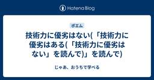

じゃあ、おうちで学べる
https://syu-m-5151.hatenablog.com/
本能を呼び覚ますこのコードに、君は抗えるか
フィード

技術力に優劣はない(「技術力に優劣はある(「技術力に優劣はない」を読んで)」を読んで) 3
3
じゃあ、おうちで学べる
syu-m-5151.hatenablog.com はじめに 一年で、こんなに価値観が変わるとは思っていませんでした。 私は「技術力に優劣はある」という記事で、技術との向き合い方を「道具として使う」「理解する」「創る」に分け、それぞれの中にも上手下手があると書きました。市場はその差を評価する。学びを続けた人ほど選択肢が広がる。コミュニケーションが得意でも、技術を学ばなくてよい理由にはならない。この主張は今も間違っているとは思いません。 エンジニアのキャリア地図 「技術」と「やりたいこと」から見つける最適解作者:サカモトソシムAmazon その記事を書いた時にも、AIコーディングエージェントはあ…
2日前

AI時代のソフトウェア要求 - Software Requirements Essentialsの読書感想文
じゃあ、おうちで学べる
はじめに 私たちは、明確なゴールを決めずにコードを書き始めていた。 書いて、動かして、また直した。 AIエージェントを使う今、それは過去の話ではない。 コードから考え始めることには、もっともな理由があります。動くものがあれば話は具体的になり、間違いにも早く気づけます。AIエージェントは、このやり方をさらにやりやすくしました。曖昧な依頼からでも、画面、API、テストまで一息に作れます。 ただし、速くなったのはコードだけではありません。検討中の案、採用した要求、実装条件を区別しないまま、誰かの要望が動くソフトウェアへ変わる速度も上がりました。完成したコードから、「なぜ作るのか」「誰が何を達成するの…
15日前
Rustで日本語推敲CLI/Skillの「Suiko」を作りました
じゃあ、おうちで学べる
はじめに Suikoは、日本語文書の自然さと読みやすさを、再現可能なルールで診断するRust製のCLIです。禁止語や翻訳調に加え、均一な文のリズム、段落構造、用語の初出、読解負荷まで確認できます。ただし、文章がAIによって書かれたかは判定しません。怪しい箇所を同じ条件で指し示し、直すか残すかの判断を人間やエージェントへ返します。 github.com Suikoの出発点は、cojiさんのNatural Japaneseです。このAgent Skillは、文章を書く前の設計、書くときの制約、書いた後の検査を一体として扱います。定型句を置換するだけで終わらず、機械が疑いを検出し、文脈を読める人間や…
18日前
RMCP 3.0でtfmcpをMCP 2026-07-28へ移行した
じゃあ、おうちで学べる
はじめに 2025年3月、私はTerraformをMCP経由で操作するツールtfmcpを開発しました。JSON-RPCのメッセージ型、標準入出力のトランスポート層、メソッドの振り分けまで、すべてRustで実装しています。当時の記事では「MCPの動作原理を理解するため、あえて配線を自分の手で組み立てた」と書きました。正直に言えば、当時は利用できるライブラリがなく、自作するほかなかったのです。 syu-m-5151.hatenablog.com それからMCPは何度も更新されました。2026年7月28日版では、プロトコルセッションと初期化ハンドシェイクがなくなりました。代わって、server/di…
23日前
TopcoatでRustフルスタック開発
じゃあ、おうちで学べる
はじめに Topcoatは、HTMLをサーバーで生成しながら、ブラウザ上の状態更新やサーバー処理もRustで記述するフルスタックフレームワークです。フロントエンド用のディレクトリやnpmを用意せず、1つのRustファイルから動きます。2026年7月に発表された0.5.0を検証しました。 サーバーサイドレンダリング、部分的な反応、セッションの転送層までは任せられます。認証、マイグレーション、運用はアプリケーション側に残ります。この記事は、その境界を1つずつ確認した記録です。 github.com tokio.rs SSRとルーティングは1ファイルで済む Rust 1.95以上を用意し、Topco…
24日前
AIの「自然な名前」が、概念の境界を消す
じゃあ、おうちで学べる
はじめに よい名前ほど、間違いに気づきにくい。 fetch_userが利用者を作って返しても、読み手は取得だと思ったまま先へ進める。 詰まらずに読めたことが、最初の誤りになる。 customer、account、member、user。生成AIへ名前の候補を求めると、文脈や規約を追加しない限り、どれも自然な候補として並びやすい。契約主体とログイン主体と請求先が別のものでも、同じ顔をして並ぶ。 識別子として置き換えるだけで、型や処理が同じなら、4つのうちどれを選んでもコードは動く。特段の取り決めがなければレビューも通る。名前が嘘になるのは、契約は生きているがログインは止まっている利用者が現れた日…
25日前
訂正した誤りが、組織で再発する理由
じゃあ、おうちで学べる
はじめに 「Rustでclone()を呼べば、値は別物として複製される」。 String::clone()で得た直観を、そのままArcへ持ち込むと、この説明に行き着く。けれど、Arc::clone()が増やすのは同じ割り当てを指す共有所有者であり、Tそのものを別の値として複製するわけではない。 use std::sync::{Arc, Mutex}; fn main() { let original = Arc::new(Mutex::new(vec![1])); let cloned = Arc::clone(&original); assert!(Arc::ptr_eq(&origi…
1ヶ月前
分かりやすい説明ほど、反例で確かめる
じゃあ、おうちで学べる
はじめに 以前、私はデータベースのトランザクションを「銀行振込」と捉えていました。送金元の残高を減らし、通知用の外部APIを呼び、送金先の残高を増やす。最後の更新に失敗しても、トランザクションをロールバックすれば元に戻るので、これで安全だと思っていました。 しかし、ロールバックできるのはデータベースの変更です。すでに外部APIが送った通知は取り消せません。私はトランザクションの仕組みをまったく理解していなかったわけではありません。データベースが保証する範囲と、利用者から見た「送金」という操作の範囲を、同じものとして扱っていました。 所有権を「本の貸し借り」、非同期処理を「料理」、キャッシュを「…
1ヶ月前
形にならなかった「おい、」を29回書いたら本
じゃあ、おうちで学べる
はじめに 最初から完璧な成果物は存在しない。 ただ出して、直して、また出した人がいるだけだ。私の場合、それが29本の「おい、」だった。 「おい、」シリーズは、形にならなかった本の原稿から始まりました。本を出せなかったときは、やはり少し絶望しました。それでも、書きかけの原稿まで消えたわけではありません。1冊へまとめず、原稿を1本ずつブログとして終わらせました。 最初から上手に書けるわけではありません。書き始めた頃の文章は、普通に不格好です。不格好なものを外へ出せば、ある程度はバカにもされます。ここは、たぶん避けられません。 ところが、1年も続けていると、だいたいの人は飽きます。批判が減る。ありが…
1ヶ月前
ターミナルを占領するのは許さないよ、Neovimですべて管理する
じゃあ、おうちで学べる
はじめに CodexやClaude Codeに作業を任せ、その間にNeovimで別のコードを編集します。これは便利です。しかし、エージェントの状態を確かめるたびに端末を順に開き、止まっていればそこで返事をします。これを繰り返すうちに、Neovimよりターミナルを見ている時間が長くなります。 正直に言えば、効率だけの問題ではありません。私は、自分の手に馴染む開発環境を自分で育てることを、PDE（Personal Development Environment）として続けてきました。エージェントが増えても、コードを読み書きする場所をNeovimから端末へ移す理由はありません。作業を任せたエージェン…
1ヶ月前
Codex CLIをNeovimで使うcodex.nvimを作ったので、使ってみてほしい
じゃあ、おうちで学べる
はじめに Neovimでコードを読んでいるとき、やりたいのはCodexをsplitで開くことではありません。開いているファイルや選択範囲を正確に渡し、会話を残したまま編集へ戻ることです。codex.nvimは、その往復を短くするためのNeovimプラグインです。 github.com このツールが必要になる場面 codex.nvimで解決したい課題は、次のとおりです。 Neovimでコードを読んだり選んだりしているとき、ファイルや範囲を説明し直さずCodexへ正確に渡し、会話を残したまま編集へ戻りたい。そうすれば、エディタとagentの間を往復するたびに作業の前提を組み立て直さずに済む。 Co…
1ヶ月前
テストが通ったあと、理解はどこに残るのか
じゃあ、おうちで学べる
はじめに 生成されたコードを、十分に読まずにマージした。 障害は起きなかった。原因を半日追うような挙動も、出なかった。 払っていることに気づいたのは、ずっとあとだった。 壊れてくれるなら、まだ分かりやすかったのだと思う。実際に起きたのは、どの変更も動いていて、どの変更も少しだけ説明できない、という状態がゆっくり広がることだった。一つずつなら思い出せる。並べると、なぜこの形なのかを言える範囲だけが減っていく。ある日リポジトリを開いて、自分が説明できない側のほうが多いことに気づく。コードベースは、いつのまにか広大になっている。 要約は読んでいた。「入力を検証し、データを保存し、結果を返す」。その説…
1ヶ月前
頭に入らないなら、関係を外へ出す
じゃあ、おうちで学べる
はじめに 個々の関数は読める。使われている概念も知っている。 それなのに、値の変化と呼び出し順と失敗時の戻り方を一緒に動かそうとすると、前に見た関係が抜け落ちていく。 足りないのは、たぶん理解力ではない。 同じ関数をもう一度開く。さっき確かめたはずの分岐を、もう一度目で追う。追っているあいだに、その前に確かめた状態のほうが消える。長いコードを前にして私が感じるのは難しさというより、この往復である。 この状態で説明を増やしても、必ずしも楽にはならない。情報が足りないのではなく、考えるために一時的に保持できる量を超えているからだ。 生成AIは私より長いコードを一度に受け取り、関係を要約できる。扱え…
1ヶ月前
忘れてもいい知識、忘れると気づけない知識
じゃあ、おうちで学べる
はじめに 生成させたRustのコードはコンパイルを通り、小さな入力を使うテストも通った。 use std::io::{self, Read}; fn read_stream(mut input: impl Read) -> io::Result> { let mut bytes = Vec::new(); input.read_to_end(&mut bytes)?; Ok(bytes) } unsafe はない。借用規則にも違反していない。それでも、この関数には入力の上限がない。read_to_end はEOFまで読み込んだ内容をVecへ追加する。入力が大きければメモリを使い…
1ヶ月前
全部読まなくても、読まなかった場所には責任を持つ
じゃあ、おうちで学べる
はじめに 知らない名前があれば止まり、呼び出し先を開く。そこにもまた、知らない名前がある。 かつての私は、そうやって定義から定義へ移っていた。 たどり着いたころには、最初に何を知りたかったのかを忘れている。 戻る道は残っていた。開いたタブは全部そこにある。それでも、なぜ最初のファイルを開いたのかだけが出てこない。仕方がないので、また先頭から読み始める。 あのころ読むのが遅かったのは、目の動きが遅いからではない。すべてを同じ重要度で読み、一度に扱える量が限られた注意へ、目的、現在地、通過した経路、細部を同時に載せていたからだ。最初に載せた目的が、いちばん先に落ちる。 いまはAIにコードを調べさせ…
1ヶ月前
説明を足す前に、どこで止まったかを分ける
じゃあ、おうちで学べる
はじめに AIにコードを渡せば、多くの場合、流暢な説明は返ってくる。けれど、人が止まる理由は同じではない。 見慣れない演算子が一つだけ置かれたコードを前にすると、私は意味を知らないために止まる。使われている関数の定義が別の場所にあるコードでは、何を探すべきかは分かっていても、必要な情報が手元にないために止まる。すべての構文を知っていても、変数の値が何度も入れ替わる処理では、途中の状態を頭の中だけで動かせずに止まる。 外から見れば、どれも「コードが分からない」という同じ沈黙である。しかし、最初の停止に必要なのは知識であり、二つ目に必要なのは情報へ戻る経路であり、三つ目に必要なのは関係を外へ出す表…
1ヶ月前
Prompting Claude Fable 5ってちゃんと読みました
じゃあ、おうちで学べる
はじめに 私はFable 5の性能を語りたい。そして、その前に自分のSkillを疑いたい。 以前のモデル向けに書いた指示は、新しいモデルでも動きます。 しかし、動くことは、能力を引き出すことを意味しません。 Prompting Claude Fable 5という題名から想像するのは、Fable 5に効く指示文の一覧です。ところが本文には、タイムアウト、ストリーミング、メモリ、サブエージェント、フォールバック、send_to_userまで並びます。プロンプトの話を読みに来たはずが、途中からクライアント、実行基盤、UI、権限管理の話を読んでいる。題名はプロンプトですが、読み終わるころには実装チケッ…
2ヶ月前
何が分からないか分からないとき、私は「学習」をやめる
じゃあ、おうちで学べる
はじめに 前の記事に、「何が分からないか分からないとき、どう乗り越えているのか」というコメントをもらいました。 syu-m-5151.hatenablog.com 同じ問いは、学生からも、SNSでも、以前から聞かれていました。 その場では断片的に答えてきましたが、1つの形にしたことはありませんでした。 ただ、この問いに1つの記事で答えようとすると、手が止まりました。私も、新しい領域では何が分からないのか分かりません。用語を調べると、その説明に知らない用語が出てきます。公式ドキュメントを開いても、どのページから読めばよいのか判断できません。AIに聞けば整った説明は返ってきますが、どこを信じ、何を…
2ヶ月前
成長とか上達って、何だろう。
じゃあ、おうちで学べる
はじめに 学生は、私より先にAIへ質問していました。 AIはすでに答えていました。 それでも、問いを持ち帰ったのは私でした。 コンテナやKubernetesの基礎を扱う学生向けのワークショップで、学生たちはAIエージェントに実行を任せていました。分からないことがあれば、まずAIに聞きます。その回答を読んでから私に質問し、私は答えます。ときどき、「どこまで確かめたのか」と問いを返しました。 これは、学生やジュニアエンジニアのAI利用を評価する話ではありません。私も日々AIエージェントを使っています。ただ、その往復が滑らかに進むほど、「できた」という言葉の輪郭がぼやけていきました。 速く実行できる…
2ヶ月前
ブログを書いていたらサイボウズ式の連載が決まって、そして終わった
じゃあ、おうちで学べる
はじめに タイトル案を5つ送った。返ってきたのは、そのどれでもなかった。 「1on1、雑談タイム──これらが失敗に終わるのはなぜか」。連載第4回の公開タイトルだ。編集部がつけたタイトルは、記事のキーワードだった「善意」や「心理的安全性」という抽象を、1on1と雑談タイムという、誰もが座らされたことのある具体へ引き下ろしていた。私の5案は、どれもその引き下ろしができていなかった。フィードバックを見て、最初に来たのは「確かに良くなっている」という実感だった。このタイトルは私の案のどれよりも、記事の中身に忠実だった。実感の数秒あとに、悔しさが来た。5案も出して、届かなかった。悔しかったのは編集に替え…
2ヶ月前
git を捨てずに、git の手前に立つ - Jujutsu (jj) の概念と、乗り換えの損益分岐点
じゃあ、おうちで学べる
はじめに 金曜の夜だった。10個のコミットを git rebase -i で並べ替えていた。4個目で衝突した。慌てて解決したが、解決を間違えた。git rebase --abort で巻き戻し、最初からやり直す。2回目はもっと雑になり、3回目で reflog を漁ってコミットを拾い直した。本番でもチームのリポジトリでもない。自分のローカルブランチを、自分一人で壊していた。 この冷や汗には覚えがある。git を10年触っていても消えない。いつ上達するんだ。毎回調べている気がするし雰囲気で触っている。怖いのは衝突そのものではない。衝突が起きた瞬間、リポジトリが「途中の状態」で固まり、間違えるとやり…
2ヶ月前
ループエンジニアリングは、サイバネティクスの再発見だ
じゃあ、おうちで学べる
はじめに またバズワードが来たな。 2026年6月、「ループエンジニアリング」という言葉でタイムラインが埋まった。 プロンプト、コンテキスト、ハーネス。半年ごとに、新しい看板が立つ。 号令はこうだ。Peter Steinbergerが「コーディングエージェントにプロンプトを書くのはもうやめろ。エージェントにプロンプトを書くループを設計しろ」と書いた。Claude Codeを率いるBoris Chernyも、「私はもうClaudeにプロンプトを書かない。ループが走っていて、それがClaudeにプロンプトを書く」と続けた。 ところが、その号令が流れてきた朝、私はちょうどKubernetesのコント…
2ヶ月前
創造は、未来への債務の発行である - Architecture for Flow の読書感想文
じゃあ、おうちで学べる
作れる。速く作れる。だが、作るとは、未来へ債務を発行することだ。 読み終えてから、1つの言い換えが頭から離れませんでした。作ることは、完了する動詞ではない。作った瞬間に「維持する・確認し続ける・説明し続ける・責任を取り続ける」という義務を、未来に対して発行している。リリースは一瞬で、支払いはそのあとずっと続く。私はキャリアのほとんどを「作れるか」「速く作れるか」に注ぎ、その発行し続けた債務を、同じ熱量で見積もってはきませんでした。胃のあたりは、いまも少し重い。 Susanne Kaiser 著『Architecture for Flow: Adaptive Systems with Domai…
3ヶ月前
おい、挨拶をしろ
じゃあ、おうちで学べる
はじめに 手を貸した相手から、礼の一言もなかった。挨拶も、なかった。 腹は立たなかった。立たなかったことのほうが、あとから効いた。 困ったらAIに任せればいい。あの人とやり直さなくても、仕事は回る。 そう思った瞬間は、合理的な判断のつもりだった。本人には言わない。優しくないし、自分が可愛い。怒るほど子供ではないが、聞き流せるほど器も大きくない。残ったのは、小さな違和感だけだった。 その違和感を持て余しているうちに、嫌な予感がした。これ、自分も誰かにやっているんじゃないか。それより怖いのは——自分には、もう誰も注意してくれないんじゃないか、ということだ。 この話は、結論だけなら一行で済みます。で…
3ヶ月前
avante.nvim は ACP Client として何をしているのか
じゃあ、おうちで学べる
はじめに この記事では、avante.nvim の ACP 実装を読んでいきます。 github.com 結論から言うと、avante.nvim の ACP 実装は「stdio JSON-RPC client」です。Agent 固有の provider 実装ではありません。 provider 名で acp_providers を引き、adapter process を起動します。その後に ACP の initialize、session/new、session/load、session/prompt を送ります。返ってきた session/update は avante の history と…
3ヶ月前
ACP は provider ではなく、エディタと Agent の境界である
じゃあ、おうちで学べる
はじめに avante.nvim を Copilot 経由で使っていた。 github.com avante.nvim は、Neovim の中に AI チャットとコード編集の UI を足す plugin だ。どの AI につなぐかは provider という設定で選ぶ。 それはそれで動きます。GitHub Copilot の認証に乗れるし、Neovim の中から質問や編集を投げられる。けれど、Claude Code や Codex CLI を日常的に使っていると、少しずつ違和感が出てきました。 syu-m-5151.hatenablog.com ターミナルでは Claude Code や Co…
3ヶ月前
私がAI時代に「プログラミングを愛する」ということ
じゃあ、おうちで学べる
はじめに AIに雛形を頼んだら、数秒で、過不足のないコードが返ってきた。 助かったはずなのに、手が止まった。 何かを、取り上げられた気がした。 このコードは、僕が書くはずだった。書かなくてよくなった。それの何が不満なんだ、と自分でも思う。雛形も、調査も、よくあるバグ取りも、頼めば一瞬で返ってくる。口では「助かる」と言う。なのに、好きだったはずの何かが、静かに手元からこぼれていく。たぶん、僕だけではない。 「プログラミングを愛する」とは、これからどういう意味になるのか。 意外かもしれないが、この問いには國分功一郎氏『暇と退屈の倫理学』がよく効く。退屈と暇をめぐるこの本は、突き詰めれば「人は何を愛…
3ヶ月前
冪等性キー: リトライで二重処理を防ぐ仕組み
じゃあ、おうちで学べる
はじめに 決済APIにリクエストを投げた。3秒待っても応答がない。タイムアウト。 クライアントがリトライした。結果、数十件の二重課金が起きた。 発覚したのは、翌朝のカスタマーサポートへの問い合わせラッシュだった。 ネットワークタイムアウトの曖昧さ ログを突き合わせ、同一注文IDに対する重複トランザクションを洗い出す作業に半日かかった。決済APIでこの状況に遭遇すると、胃が痛くなる。 サーバー側で処理が完了しているなら、リトライは二重課金を引き起こす。完了していないなら、リトライしなければ注文が宙に浮く。タイムアウトは成功とも失敗とも言えない。この曖昧さこそ、分散システムにおける厄介な問題だ。 …
3ヶ月前
Watermark: ストリーム処理における時間の扱い方
じゃあ、おうちで学べる
はじめに コンシューマを再起動した翌朝、ダッシュボードの数値が跳ね上がっていた。 バグを疑った。半日追ってから、processing time集計がバックログの再処理で壊れただけだとわかった。 event timeとprocessing time。同じ時刻ではない。 2つの時刻 ストリーム処理で最初にぶつかる壁は、「時間」が1つではないという事実だ。 イベントが実際に発生した時刻（event time）と、システムがそれを受信した時刻（processing time）。この2つは一致しない。ネットワークに遅延がある限り、processing timeはevent timeより後になる。問題は、…
3ヶ月前
Tail Latency: fan-outが尾部遅延を増幅する数理
じゃあ、おうちで学べる
はじめに 個々のバックエンドのp99は10msで安定していた。 APIゲートウェイのp99だけが、それを大きく超えていた。 計測はできていた。fan-outの確率的増幅が原因だと気づくまでに、数週間かかった。 「p99が10msだから大丈夫」という誤解 レイテンシの議論で「p99は10msです」と言われると、ほとんどの人が安心する。99%のリクエストが10ms以内に返ってくるなら十分に高速だ、と。p50は中央値、p99は遅い側から1%の位置、p99.9はさらに尾の0.1%の位置、というパーセンタイル表記だ。 この認識は、1台のサーバーに1つのリクエストを投げて1つのレスポンスを待つモデルでは正…
3ヶ月前